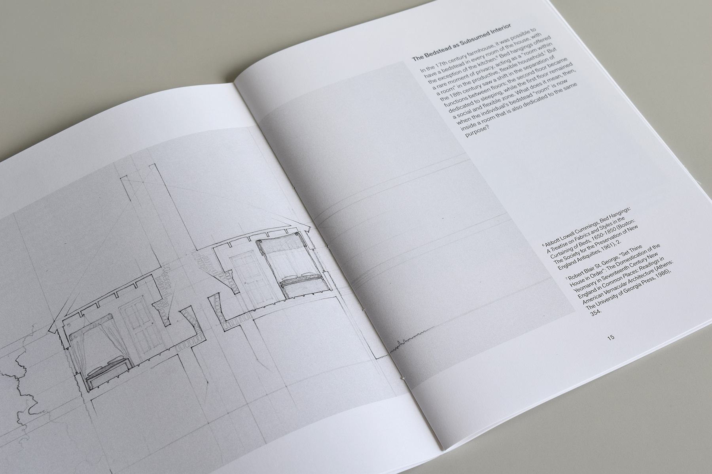
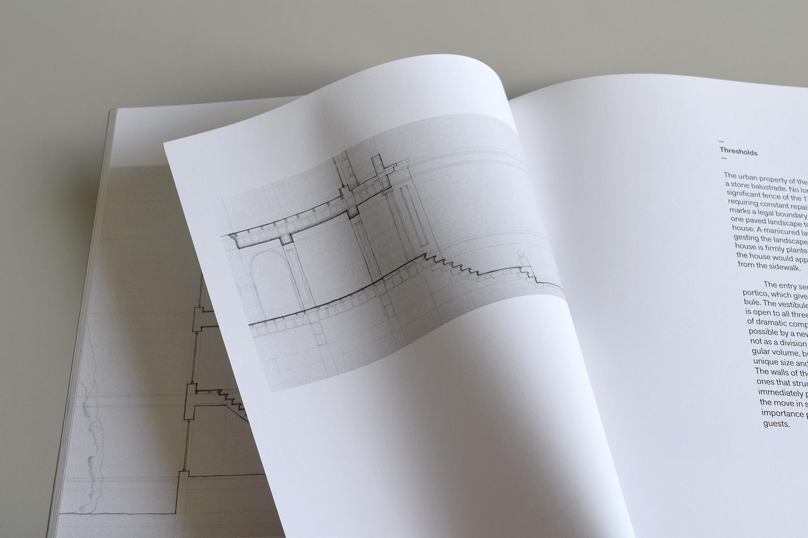

Tracing the Interior
The American Interior, Edward Cooke
Fall 2020
The American Interior course considered many ways of analyzing interior space—from probate inventories to architectural theory—in order to understand the ideology, psychology, and embodied experiences that produce an interior environment. The most common reference drawings were plans in order to show the flow between rooms and their development over time.
In order to synthesize and expand on the material covered in the course, I have drawn sections as a way of investigating the question: where is the boundary of the interior? By this I do not mean the true thermal envelope, but the conceptual border that encloses spaces of interiority. The tectonic makeup of the wall is considered in detail, as I argue that even technical construction details—typically limited to professional drawing sets—may also support an ideological reading of the interior. Finally, the sections are cut through the surrounding site to suggest their connection with the landscape and the participation of the exterior in constructing interiority. Even the drafting lines that remain on the page contribute to the negotiation of an interior boundary by implying the layering and nesting of rooms and landscape.
This project aims to synthesize the semester-long investigations of the American Interior course by thinking through drawing. The drawings seek to identify the changing boundary of the interior over time by looking closely at four case studies. The first two are early colonial houses from the 17th and 18th centuries—a New England farmstead and a later townhouse, which represent not specific historic examples but are abstractions and compilations of typical house arrangements described by scholars. The third considers the Morse Libby House in Portland, Maine, as a specific example of a 19th century mansion—the largest house of the series. Finally, the fourth example is the Eames Case Study House, one of the most famous 20th century architectural landmarks, to consider the modern interior and landscape. The accompanying short essays serve to support and clarify the investigatory work of the drawings.

